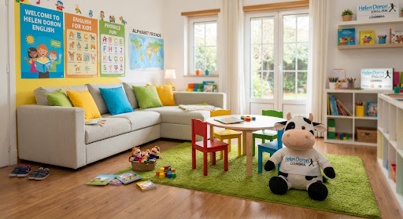
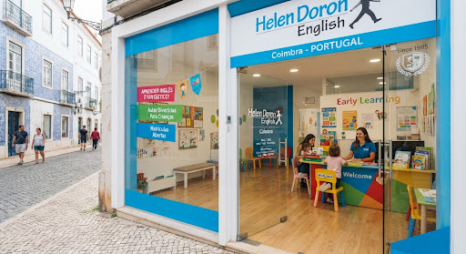
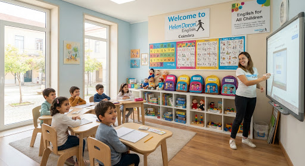

Aprender Inglês com
brincadeiras.
O Futuro Começa Aqui.
O método pioneiro que ensina inglês da mesma forma intuitiva que os bebés aprendem a língua materna: sem tradução mecânica, com reforço positivo diário e uma metodologia lúdica comprovada por mais de 3 milhões de alunos.

Qual é a Idade do Seu Filho?
Cada fase da infância e adolescência tem necessidades cognitivas distintas. Clique nas etapas para descobrir como o método Helen Doron se adapta a ele:
Inglês desde o Berço com Amor e Conexão
Desenvolve a audição fonética inglesa enquanto o cérebro do bebé cria as conexões neurológicas primárias. Os pais participam ativamente em dinâmicas de afeto, canções sensoriais e jogos de estímulo motor.
- check_circle Estimulação sensorial auditiva diária
- check_circle Fortalecimento do vínculo afetivo mãe/pai e bebé
- check_circle 0% pressão, 100% carinho e brincadeira
Até aos 7 anos, o cérebro humano absorve novos idiomas com a mesma facilidade da língua materna. Não existe sotaque estrangeiro quando a audição é estimulada cedo!
Conheça o Nosso Centro em Coimbra
Salas alegres, luminosas, seguras e concebidas à medida da imaginação das crianças em cada fase do seu desenvolvimento.

Fachada Exterior & Boas-Vindas
Sinalética oficial Helen Doron, montra envidraçada acolhedora, acessibilidade plana e ambiente seguro no coração de Coimbra.
Sala de Conforto & Tapete
Equipada com sofás macios, tapete verde para dinâmicas em círculo no chão e mesinhas infantis coloridas para trabalhos manuais.

Mochilas & Didática Global
Acesso a mochilas pedagógicas, livros sonoros, cartões ilustrados e tecnologia imersiva patenteada para acelerar a fluência auditiva.
Imersão Musical Natural
Canções infantis e histórias especialmente compostas com cadência fonética inglesa que fixam o vocabulário de modo 100% intuitivo.
Porquê Escolher Helen Doron Coimbra?
Descubra por que a nossa abordagem produz crianças naturalmente bilíngues e felizes em oposição às metodologias tradicionais de memorização.
| Critério de Aprendizagem |
Helen Doron Coimbra
|
Escola / Ensino Tradicional |
|---|---|---|
| Tamanho da Turma | Reduzido (4 a 8 alunos) | 20 a 28 alunos por turma |
| Modo de Aprendizagem | Imersão natural e lúdica (como língua materna) | Gramática abstrata e listas de vocabulário |
| Ambiente de Sala | Tapetes, movimento, canções e jogos físicos | Secretárias alinhadas e silêncio imposto |
| Reforço e Avaliação | Reforço positivo contínuo, zero pressão | Foco em testes punitivos e notas |
| Fluência e Pronúncia | Espontânea, auditiva e sem sotaque artificial | Tradução mental com hesitação e timidez |
| Preparação Cambridge | Centro de preparação oficial com certificação internacional | Geralmente não incluído |
“Excelentes professores, uma escola com excelente ambiente de aprendizagem. O meu filho vai com um sorriso de orelha a orelha para cada aula!”
“As crianças adoram e aprendem alegremente. Professoras muito empenhadas e carinhosas que sabem manter o interesse aceso sem sobrecarregar.”
“O progresso na pronúncia e na confiança a falar inglês é impressionante. Já canta as músicas no carro com pronúncia britânica perfeita!”
Perguntas Frequentes
Tudo o que os pais precisam de saber antes da aula experimental em Coimbra.
Reserve uma Aula Experimental Gratuita
Venha com o seu filho conhecer a nossa escola em Coimbra. Uma experiência alegre e esclarecedora sem custos.
Pedido Registado com Sucesso!
Obrigado pelo seu interesse! A nossa coordenadora pedagógica em Coimbra entrará em contacto muito em breve para agendar o dia e hora ideal.
Onde Estamos em Coimbra
Localização central com facilidade de acesso pedonal, transportes públicos e estacionamento conveniente nas imediações.